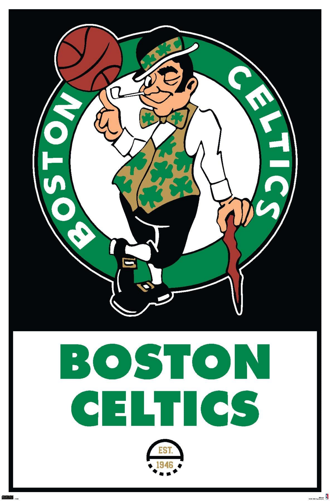

Boston Celtics
|  |
O Boston Celtics é uma das franquias mais históricas e bem-sucedidas da NBA, com sede em Boston, Massachusetts. Fundada em 1946, a equipe é conhecida por sua rica herança de campeonatos e sucesso ao longo dos anos. Os Celtics conquistaram um impressionante número de títulos da NBA, sendo a equipe com mais campeonatos na história da liga, com destaque para sua era dominante nas décadas de 1950 e 1960, liderada por lendas como Bill Russell e Bob Cousy. Os Celtics são conhecidos por seu estilo de jogo baseado em defesa sólida, passe eficaz e trabalho em equipe. A rivalidade histórica com o Los Angeles Lakers é uma das mais emblemáticas na história do esporte, tendo se enfrentado em várias finais memoráveis da NBA. O TD Garden, localizado em Boston, é o palco dos jogos dos Celtics e é conhecido por sua atmosfera vibrante e fanática. É conhecido mundialmente por obter 17 títulos da NBA, o que o deixa como o maior vencedor da história da liga junto ao Los Angeles Lakers, o time conseguiu ser apontado como uma das melhores equipes de basquetebol de todos os tempos, dominou de 1957 a 1969, quando conquistou 11 de 13 campeonatos. A equipe consolidou um dos recordes mais impressionantes nos anos de 1959-1966 onde conseguiram vencer o campeonato da NBA 8 vezes consecutivas, um feito que nenhuma outra equipe fez. A franquia continua a ser uma das equipes mais respeitadas e competitivas na NBA, atraindo uma base de fãs leais e dedicados. A história e o sucesso dos Celtics os tornam uma parte fundamental da cultura esportiva de Boston e uma das equipes mais emblemáticas da liga. |